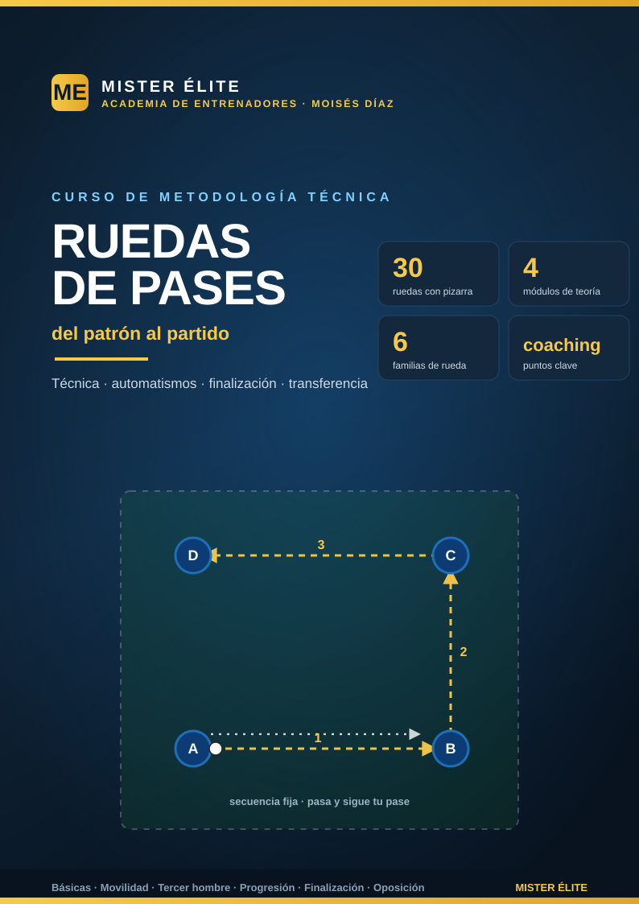

Ruedas de pases — del patrón al partido
Técnica, automatismos y finalización con un banco de 30 ruedas listas para el campo
Bienvenido al curso de ruedas de pases de MISTER ÉLITE — Moisés Díaz. La rueda de pases es la herramienta más usada —y peor aprovechada— del fútbol formativo y profesional. Bien diseñada, construye la técnica, el ritmo y los automatismos colectivos que luego aparecen en el partido. Mal diseñada, es una fila de jugadores parados pasando el balón sin objetivo.
Este curso te da el método para que cada rueda tenga sentido, y un banco de 30 ruedas —cada una con su pizarra— ordenadas de lo simple a lo complejo.
La idea que atraviesa el curso: la rueda da la respuesta (qué pase hacer); el rondo y el partido obligan a buscarla. La rueda construye el automatismo; la oposición lo pone a prueba. Por eso aquí no nos quedamos en "pasar bien": progresamos del patrón cerrado al juego con decisión.
Filosofía del curso
- Poca teoría, mucha aplicación. Lo justo para entender el porqué; el resto, 30 ruedas dibujadas y listas.
- Cada rueda con un objetivo. Ninguna "por hacer pases": cada una entrena algo concreto y tiene sus coaching points.
- Progresión real. De la forma básica al patrón con oposición y finalización.
- Transferencia al juego. Cada rueda reproduce un gesto que existe en el partido (salida, tercer hombre, centro y remate…).
Cómo está organizado
Teoría (4 módulos) — el porqué: 1. Fundamentos — qué es una rueda, en qué se diferencia de un rondo, para qué sirve y los errores típicos. 2. Principios técnicos — los coaching points que debes corregir: pase, primer toque, perfil, escaneo, comunicación. 3. Organizar y progresar — cómo montarlas (medidas, balones, colas) y la progresión metodológica de 7 niveles. 4. Del patrón al juego — cómo "abrir" la rueda hacia la oposición, la decisión y el partido.
Práctica — el banco de 30 ruedas en 6 familias: - Cómo usar el banco — índice y cómo leer cada ficha. 1. Básicas (formas: cuadrado, rombo, triángulo, Y, estrella). 2. Movilidad y rotación (sigue tu pase, rotaciones, permutas). 3. Pared y tercer hombre (give-and-go, dejar de cara, tercer hombre). 4. Progresión por zonas (salida, romper líneas, cambio de orientación). 5. Finalización (centro y remate, pase de la muerte, definición). 6. Oposición y transferencia (semioposición, decisión, transición a portería).
Cómo usar el curso
- Lee los 4 módulos (una tarde). Quédate sobre todo con los coaching points del Módulo 2.
- Elige el objetivo de tu sesión y ve a la familia que lo entrena.
- Coge la rueda (su pizarra te da la disposición y la secuencia) y móntala con sus medidas.
- Corrige en vivo los 1-2 coaching points de esa rueda.
- Cuando el patrón salga limpio, progresa: añade movimiento, oposición o finalización.
La base metodológica (Coerver, Horst Wein, juego de posición, FIFA Training Centre) está recogida en el material del curso. Las medidas son orientativas: adáptalas a tu categoría.
MISTER ÉLITE — Moisés Díaz · Academia de entrenadores